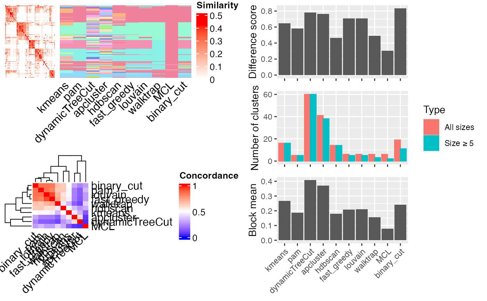
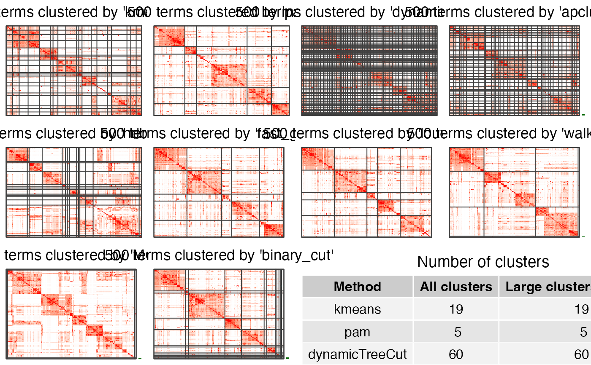

Compare clustering methods
Usage
cmp_make_clusters(
mat,
method = setdiff(all_clustering_methods(), "mclust"),
verbose = TRUE
)
cmp_make_plot(mat, clt, plot_type = c("mixed", "heatmap"), nrow = 3)
compare_clustering_methods(
mat,
method = setdiff(all_clustering_methods(), "mclust"),
plot_type = c("mixed", "heatmap"),
nrow = 3,
verbose = TRUE
)Arguments
- mat
The similarity matrix.
- method
Which methods to compare. All available methods are in
all_clustering_methods(). A value of"all"takes all available methods. By default "mclust" is excluded because its long runtime.- verbose
Whether to print messages.
Ddetails The function compares following default clustering methods by default:
-
kmeansseecluster_by_kmeans. -pamseecluster_by_pam. -dynamicTreeCutseecluster_by_dynamicTreeCut. -mclustseecluster_by_mclust. By default it is not included. -apclusterseecluster_by_apcluster. -hdbscanseecluster_by_hdbscan. -fast_greedyseecluster_by_fast_greedy. -louvainseecluster_by_louvain. -walktrapseecluster_by_walktrap. -MCLseecluster_by_MCL. -binary_cutseebinary_cut.Also the user-defined methods in
all_clustering_methodsare also compared.- clt
A list of clusterings from
cmp_make_clusters().- plot_type
What type of plots to make. See Details.
- nrow
Number of rows of the layout when
plot_typeis set to"heatmap".
Value
cmp_make_clusters() returns a list of cluster label vectors from different clustering methods.
cmp_make_plot() returns no value.
compare_clustering_methods() returns no value.
Details
For cmp_make_plot(), if plot_type is the default value "mixed", a figure with three panels will be generated:
A heatmap of the similarity matrix with different classifications as row annotations.
A heatmap of the pair-wise concordance of the classifications of every two clustering methods.
Barplots of the difference scores for each method (calculated by
difference_score), the number of clusters (total clusters and the clusters with size >= 5) and the mean similarity of the terms that are in the same clusters.
If plot_type is "heatmap". There are heatmaps for the similarity matrix under clusterings
from different methods. The last panel is a table with the number of clusters under different
clusterings.
compare_clustering_methods() is basically a wrapper function of cmp_make_clusters() and cmp_make_plot().
Examples
# \donttest{
mat = readRDS(system.file("extdata", "random_GO_BP_sim_mat.rds",
package = "simplifyEnrichment"))
compare_clustering_methods(mat)
#> Cluster 500 terms by 'kmeans'...
#> 16 clusters, used 3.504993 secs.
#> Cluster 500 terms by 'pam'...
#> 5 clusters, used 21.06912 secs.
#> Cluster 500 terms by 'dynamicTreeCut'...
#> 60 clusters, used 0.577157 secs.
#> Cluster 500 terms by 'apcluster'...
#> 41 clusters, used 0.6789331 secs.
#> Cluster 500 terms by 'hdbscan'...
#> 14 clusters, used 0.172466 secs.
#> Cluster 500 terms by 'fast_greedy'...
#> 6 clusters, used 0.104732 secs.
#> Cluster 500 terms by 'louvain'...
#> 6 clusters, used 0.08450413 secs.
#> Cluster 500 terms by 'walktrap'...
#> 6 clusters, used 0.263876 secs.
#> Cluster 500 terms by 'MCL'...
#> 6 clusters, used 1.821683 secs.
#> Cluster 500 terms by 'binary_cut'...
#> 19 clusters, used 4.193117 secs.

compare_clustering_methods(mat, plot_type = "heatmap")
#> Cluster 500 terms by 'kmeans'...
#> 19 clusters, used 3.305151 secs.
#> Cluster 500 terms by 'pam'...
#> 5 clusters, used 21.00071 secs.
#> Cluster 500 terms by 'dynamicTreeCut'...
#> 60 clusters, used 0.1564171 secs.
#> Cluster 500 terms by 'apcluster'...
#> 41 clusters, used 0.7714469 secs.
#> Cluster 500 terms by 'hdbscan'...
#> 14 clusters, used 0.1589549 secs.
#> Cluster 500 terms by 'fast_greedy'...
#> 6 clusters, used 0.09291291 secs.
#> Cluster 500 terms by 'louvain'...
#> 6 clusters, used 0.07026696 secs.
#> Cluster 500 terms by 'walktrap'...
#> 6 clusters, used 0.2535839 secs.
#> Cluster 500 terms by 'MCL'...
#> 6 clusters, used 1.781449 secs.
#> Cluster 500 terms by 'binary_cut'...
#> 18 clusters, used 4.113788 secs.

# }